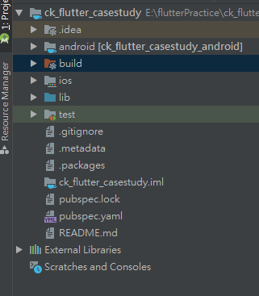
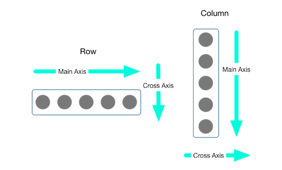
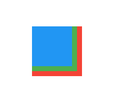
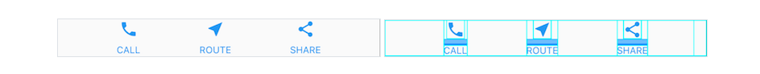
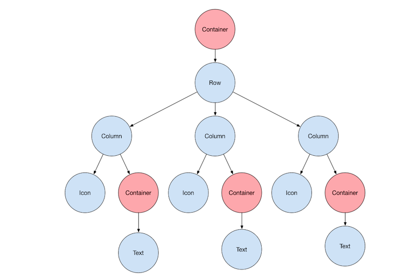
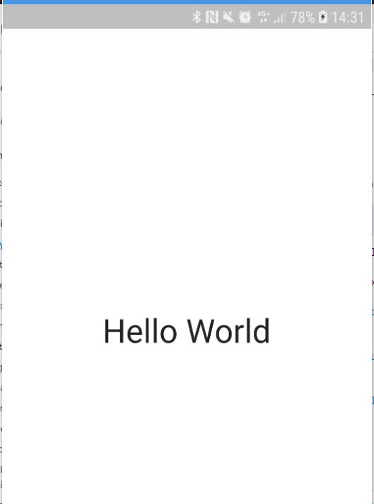
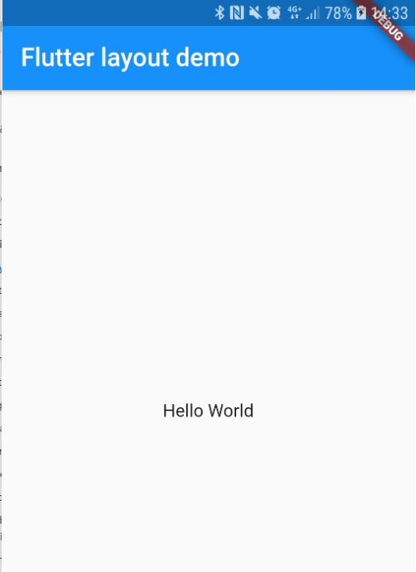

[Flutter] 專案程式基本架構
上一篇建立了第一個 Flutter 專案，這回從零開始，認識 Flutter 的基本程式架構
專案架構
一個基本的 Flutter 程式架構，會長這樣

android/build: 建置輸出成 Android 的專案ios: 建置輸出成 iPhone 的專案lib: 主要程式碼存放位置test: 測試碼存放位置pubspec.yaml: 專案設定檔，包含引用其他套件的設定是寫在這個檔案內
程式進入點
基本上是由 Android Studio 這逼設定要從哪一個檔案執行，因為每一個 dart 檔案都是可以被單獨執行的。而預設進入點是 main.dart
1 | import 'package:flutter/material.dart'; |
- line 3: main () 程式進入點
runApp()是來自package:flutter/material.dart;檔案，傳入要啟動的 widget，這裡是傳MyAppStatelessWidget- line 6
build是 Flutter 產生畫面時會執行的 function, 裡面也是回傳一個要顯示的 widget，而這裡我回傳另外一個StatefulWidget
至於什麼是 StatelessWidget 和 StatefulWidget 這留到後面在介紹，但到這邊就可以發現 Flutter 是由很多個 widget 將整個 app 的畫面建構出來的一種開發模式
基本 Widgets
-
Text:
- 要在 Flutter 上面顯示文字，不能很單純的傳入文字，是必須使用 Text widget，Text widget 可以設定文字的顯示方式
1
2
3
4
5
6Text(
"Hello",
textAlign: TextAlign.center,
overflow: TextOverflow.ellipsis,
style: TextStyle(fontWeight: FontWeight.bold),
)- 如果文字要顯示得更多樣式，可以使用
Text.rich的方法來完成
1
2
3
4
5
6
7
8
9Text.rich(
TextSpan(
text: 'Hello', // default text style
children: <TextSpan>[
TextSpan(text: ' beautiful ', style: TextStyle(fontStyle: FontStyle.italic)),
TextSpan(text: 'world', style: TextStyle(fontWeight: FontWeight.bold)),
],
),
) -
Container顧名思義，是一個容器可以用來包其他的 widget，可以想成 HTML 裡面的div1
2
3
4
5
6
7
8
9
10
11
12Container(
height: 56.0, // in logical pixels
padding: const EdgeInsets.symmetric(horizontal: 8.0),
decoration: BoxDecoration(color: Colors.blue[500]),
// Row is a horizontal, linear layout.
child: Row(
// <Widget> is the type of items in the list.
children: <Widget>[
...
],
),
); -
Row、Column是用來排版用的 widget，Row是橫向排，而Column是垂直
-
Stack會將 children 內的 widget 用疊層的方式呈現，越晚設定的 widget 會顯示在最上面1
2
3
4
5
6
7
8
9
10
11
12
13
14
15
16
17
18
19Stack(
children: <Widget>[
Container(
width: 100,
height: 100,
color: Colors.red,
),
Container(
width: 90,
height: 90,
color: Colors.green,
),
Container(
width: 80,
height: 80,
color: Colors.blue,
),
],
)
當然還有其他更用來排版的 widget
排版
Flutter 在排版上的想法，跟在開發網頁時有很多雷同的概念，這裡有些圖可以來顯示 Flutter 的排版概念 (圖出處: https://flutter.dev/docs/development/ui/layout)


在不使用 Material Widget 排版的方式會是如此排版
1 | import 'package:flutter/material.dart'; |

如果是使用 MaterialApp 來排版呢? 起手式是這樣
1 | class MyApp extends StatelessWidget { |

更多的排版細節等下一篇再來研究，畢竟 Flutter 要寫好，排版的基本功要練好，就跟切版一樣